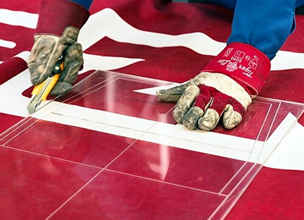
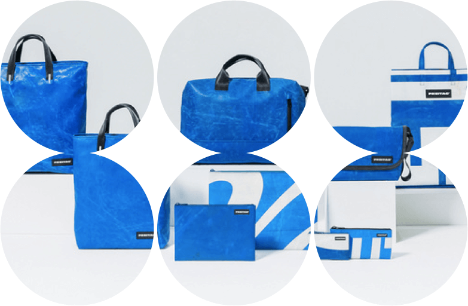

업사이클upcycle은 리사이클recycle에 업그레이드upgrade가 붙은 것으로, 단지 재활용하는 것을 넘어서 '낡은 제품에 더 많은 가치를 부여하는 것'이다. 버려진 자원이나 쓸모 없는 폐품을 '원재료를 분해하는 과정 없이' 활용하여 더 좋은 품질의 제품으로 재 가공rework하는 것이다.
리사이클recycle은 "단순한 재활용"을 의미하는 반면, 업사이클upcycle은 디자인이 쓸모 없어져 버린 물건을 '해체'하거나 '재조합'해 예술작품으로 만들어 "제품의 가치를 높여주는 행위를 포함"한다는 것이다. 즉, 예술적 가치와 함께 상품의 가치까지도 상승시키는 것이다.
프라이탁은 버려진 천막, 자동차 방수포 등을 사용하여 지갑, 가방, 파우치, 핸드폰 케이스 등 다양한 액세서리를 제작하고 판매하는 업사이클링 브랜드이다. 프라이탁은 마커스 프라이탁Markus Freitag과 다니엘 프라이탁Daniel Freitag 형제가 1933년 설립한 가방 제조 회사이다. 그들은 처음에는 상업적 용도가 아닌 비가 와도 스케치가 젖지 않게 할 만한 튼튼한 메진저 백을 만들어야겠다는 생각에서 가방 만드는 일을 시작했다.
프라이탁은 폐 트럭 덮개를 사용하여 제품을 생산하기 때문에 제품 제작 과정도 다른 브랜드와 많이 다르다.
5년 이상된 폐 방수포를 수거하여 프라이탁 가방의 주재료를 모은다.
방수포에 달린 끈과 고정 장치 등을 제거하는 과정을 거쳐 버려졌던 폐기물이 가방의 원자재가 된다.
가방의 원자재인 방수 천을 대형 세탁기에 넣어 방수포에 묻은 오염물을 깨끗하게 세척하고 푸르게 슨 녹자국을 더욱 도드라지게 만들어 개성을 살린다.
세탁된 방수 천을 하나하나 수작업으로 재단하고 배열, 구상하여 가방을 디자인한다.
재단은 항상 투명한 판과 칼들을 사용하는데, 이는 가장 최선을 디자인을 가진 가방을 만들기 위해 조각들을 눈으로 보며 조합하고 배열하기 때문이다.
조합된 천들을 세계 각국의 재봉 공장으로 운반하고 가방이 단단하게 고정될 때까지 재봉하여 제품이 만들어진다.
마지막으로는 여러번의 내구성 테스트를 통해 품질 검사가 이루어지고 전세계 매장으로 보내져 판매된다.
프라이탁은 재활용 원재료를 사용하기 때문에 더 많은 노력과 과정이 필요하다. 프라이탁의 모든 제품은 수작업으로 만들어지며 많은 과정을 거치기 때문에 20~70만원대의 상당한 고가의 브랜드이다. 그러나 세계 350개 매장에서 연간 500억원어치가 팔려나갈 정도로 많은 사람들의 사랑을 받고 있다.
프라이탁의 성공 비결은 무엇일까?
브랜드의 성공 비결 중 하나는 우선 똑같은 사이즈와 규격화된 기성품에서 벗어났다는 것이다. 프라이탁 제품을 보면 배색과 디자인이 모두 다르다. 소비자들은 자신이 구매한 가방이 세상에 하나뿐인 가방이라는 생각으로 더 큰 만족감을 가진다.
"튼튼하며 어느 하나 같은 디자인은 없다"
이런 업사이클의 특징을 잘 살린 것이 프라이탁의 성공 비결 중 하나이다.
프라이탁이라는 브랜드가 옷이 아닌 가방을 제작한다는 점도 성공 비결로 꼽을 수 있다. 현재 업사이클 제품 중에서 가방은 재활용 브랜드의 판매 아이템 중에서 가장 많이 판매되고 있다. 이유는 옷과는 달리 가방은 직접 피부에 접촉하는 면이 손과 팔 부위 정도이기 때문이다. 또한 소재의 종류와 질에 대한 선택의 폭이 넓고 의류 소재보다는 위생에 부담이 덜하기 때문에 생산과정에서 원료세척과정에 드는 비용을 절감할 수 있다.
프라이탁의 마지막 성공 비결은 역발상이다. 프라이탁은 역발상을 통해 가치를 만들어냈다. 흔히 제품에 생긴 흠집을 보면 '불량'이라고 생각한다. 하지만 몇만 킬로미터를 이동한 뒤 가방으로 재탄생한 프라이탁의 흠집은 '불량'이 아닌 '사연'이 된다. 심지어 세탁에 사용된 공업용 세제 냄새는 고유한 특성으로까지 인식되기도 한다. 이렇게 프라이탁은 독창적인 해석으로 제품에 의미를 부여하고 그것은 소비자들에게도 영향을 미친다.
